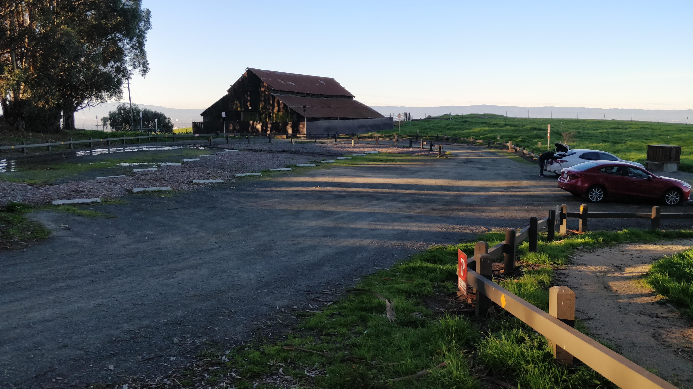
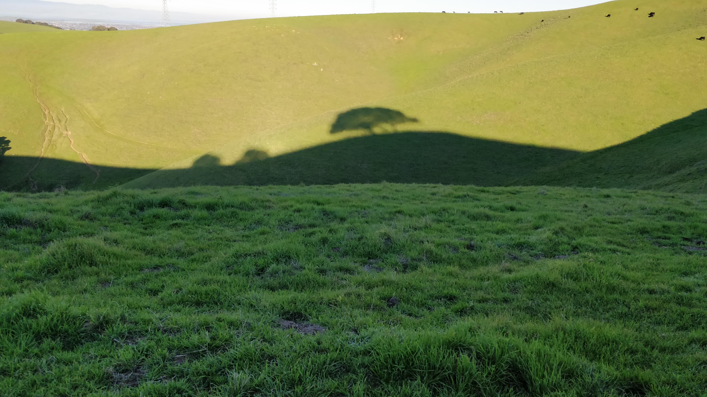
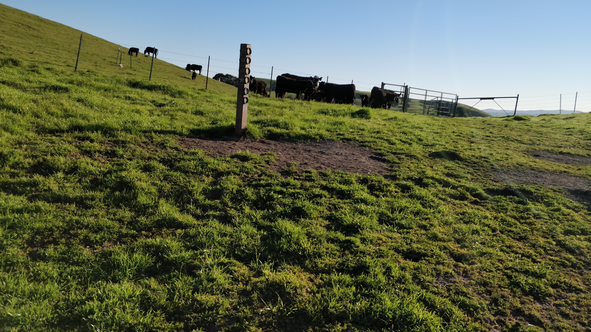
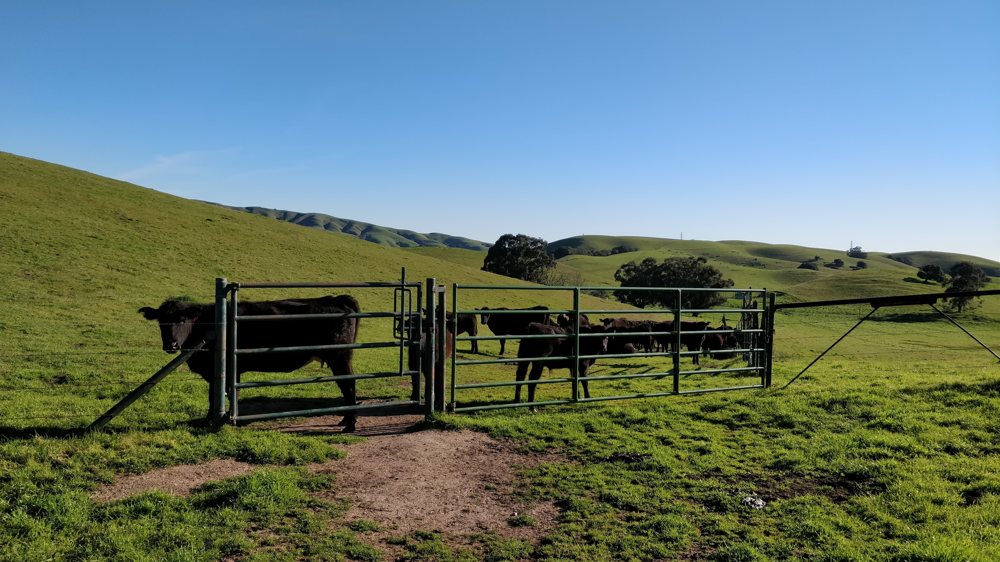
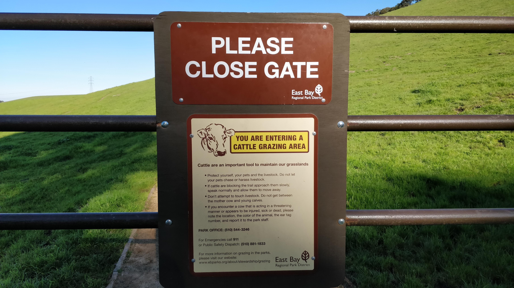

Vargas palteau is one of the less known East Bay parks in the Fremont hills. It overlooks Niles Canyon, Fremont, Union city and San Francisco Bay beyond. We went hiking during the month of March 2019 when California in general had good showers during Spring.
- Best Time of the year to Visit: During Spring after the showers when the meadows have turned green
- Best Time of the day to visit: The park opens promptly at 8am
- How to get there: If you come on 680, we need to take the Vargas Road exit and drive uphill on Morris Canyon Road
- Parking: The entrance has around 20 car parking spaces. 
- Trail details:
- Trail name: Golden Eagle Trail and Deer Gulch trail
- Strenuous level: Easy
- Total round trip: 4miles
- Elevation: Not too steep
- Things to keep in mind:
- Restrooms are only at the trailhead in the parking lot.
- It can have large puddles of muddy water in the trail which you may have to jump and go
- Beware of cattle which may get aggressive if you are alone. Better to go in a large group.
We reached the trailhead at 7am only to realize that the gates open at 8am. We stayed in the car wondering if we should take a different trail but decided to stay and wait. To my utter surprise, a car pulled over just next to our car and a lady came running to open the lock on the gates. Although she was right on time at 8am, she apologized and was on her way out again. The wait was worth it to witness people keeping time and value others’ time on a nice Saturday weekend morning. :) 
We started with the Golden Eagle trail. We were planning to go to take a small detour to the view point. We had to jump and struggle to cross the swamp at a few places but it was not that bad. Until we reached the point where we had to take a fork to reach the viewpoint according to trail map. We found that we were greeted by not so welcoming residents of the plateau, the cattle. 
We get a nice view of the city. Lots of cows grazing around.

It is a pity that we could not finish the predetermined trail since we were the only ones walking while there was a group of rather angry looking cows almost ready to charge at us. We had to come back, couldn’t have risked, we being tiny creatures in front of the huge creatures if we get trapped with nowhere to go.

We saw as we ended our hike that there was a board at the entrance put up which we conveniently ignored. 
If you start with Golden Eagle trail and continue on the Deer Gulch trail to the end to see the views of Bay Area, it completes exactly 2 miles. Total round trip would then be 4miles with not so much of elevation. I highly recommend going there with a big group of people on a nice Spring day to this beautiful green pastures in the East Bay.